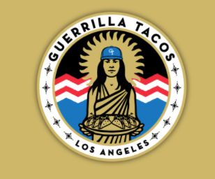
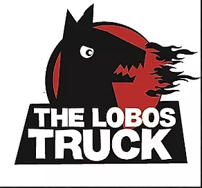
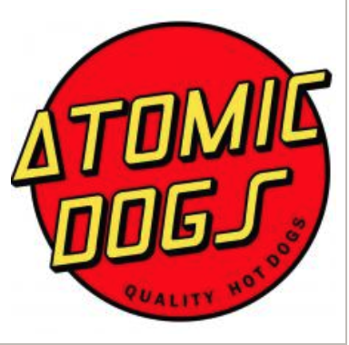
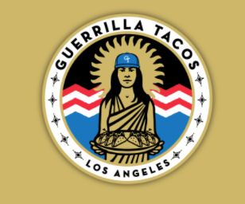
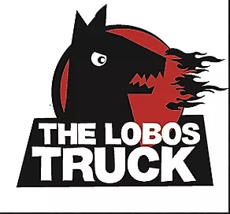
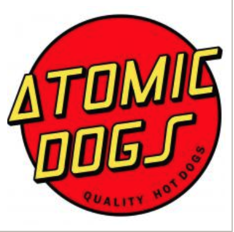

FoodPursuit
We do the hunt of finding fresh gourmet food for you. Bringing diners and mobile food vendors together is what we do.

We do the hunt of finding fresh gourmet food for you. Bringing diners and mobile food vendors together is what we do.
Real time statuses on where your favorite food trucks are and which food trucks are nearest to you. You can browse menus, order online and get texted when your food is ready.
We make it easy for food truck owners to update their location, change menu items, pricing and product availability. So you can just focus on doing what you do best. Making good food.
 




